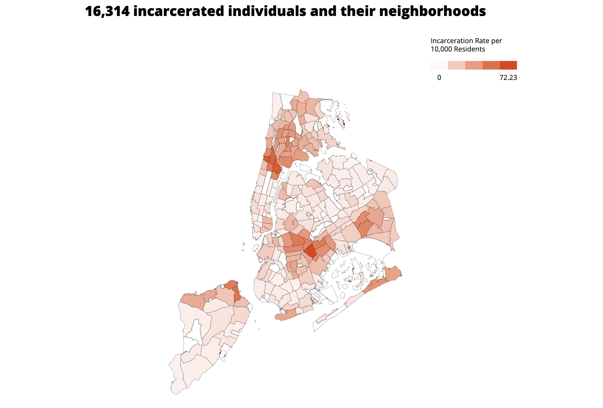
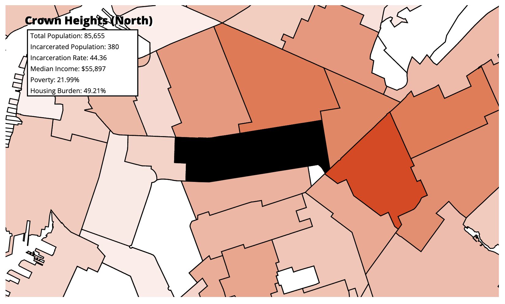

Interactive Data Visualization Final Portfolio

Check it out!
Abstract
In an attempt to end prison gerrymandering in New York, The New York State Legislative Task Force on Demographic Research and Reapportionment puts out an amendment to the census which reallocates everyone counted in NY state prisons to their previous known address. Taking this data and subtracting the original census population data, leaves us with a dataset allowing us to see where each incarcerated individual in NY state prisons comes from (this data does not include Federal prisons, those folks who are incarcerated in NY but previously lived in a different state, and those whose addresses could not be geocoded). This project will allow users to explore NYC neighborhoods via a choropleth map of incarceration rates. Additional information of median household income, % of income spent on housing, and poverty rates will also be available to let the user see how these economic factors may relate to incarceration rates in their neighborhoods.
Sketches


Proposed Site Architecture

Data
New York State Legislative Task Force on Demographic Research and Reapportionment
US Census 2020
American Community Survey 5 Year Estimates (2016-2020)
Open Data NYC (census tract and NTA geospatial data)
Data Analysis
For this project I used a dataset that I had compiled last semester using the Pandas library in Python for cleaning and QGIS for further analysis. First, I wanted to focus only on NYC neighborhoods, so I only kept data from the 5 counties (Bronx, Kings, New York, Queens and Richmond). For the economic factors from the US Census (median household income, % poverty and % housing burden) I kept only the totals per census tract, and joined them all into one dataframe consisting of all the economic factors for each census tract across the 5 boroughs. I then brought this into QGIS and joined it with census tract geospatial data so that it could be mapped. From there, using QGIS, I made the data into centroids of each census tract which allowed me to average all of the centroid information into NTA. Thus leaving me with a geospatial dataset with neighborhood geographies and the economic factors per neighborhood.
In order to find the number of incarcerated individuals from each geography, I took the adjusted dataset (from the Task Force) and subtracted the original 2020 Census population dataset - to give me a dataset with only the number of people per geography that were incarcerated at the time. From there, the analysis looks similar to what I did with the economic factors from the census. I had to join the data with census tract geospatial data, and create centroids for each census tract. Then I counted the centroids in the NTA polygons to get the number of people incarcerated per neighborhood area. I joined the economic data and population data to end up with one geojson showing the population, incarcerated population, % poverty, median household income and % housing burdened per NYC neighborhood.
Note: I define % housing burdened as individuals/families spending 30% or more of their income on housing costs including rent and mortgage.